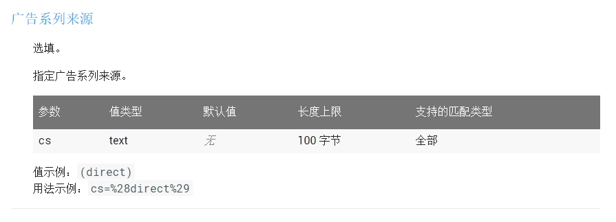
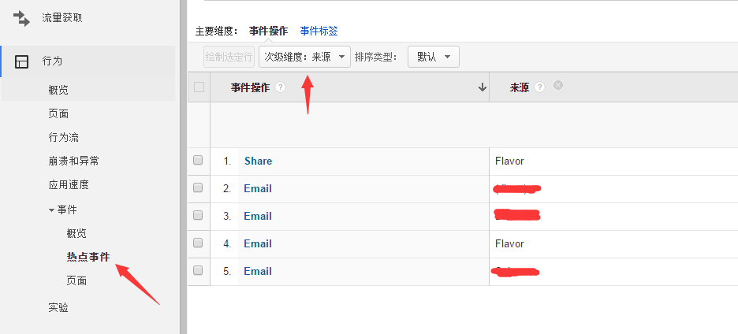
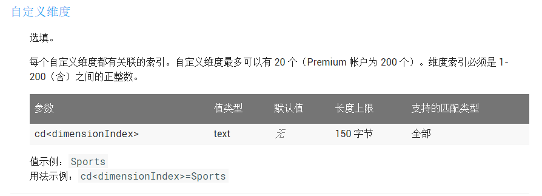
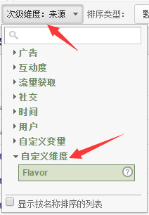
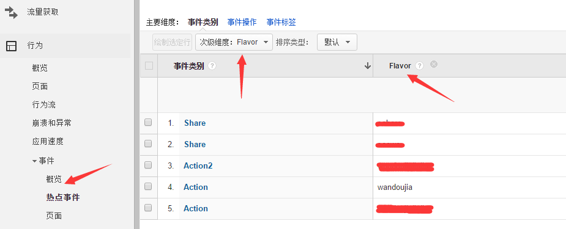

前言
翻遍官方Android版Guide文档，你会发现一点多渠道相关的描述都木有。原因是GA（Google Analytics）里面没有多渠道这个概念，GA最初是从网页统计延伸到移动端的，在网页版的统计里面，有个叫做广告系列来源的东西，可以用来统计流量的来源。乍看之下，跟我们移动端的多渠道有点类似，用来统计不同市场的数据。经过这段时间的使用，主要有2种方式实现：
一、通过内置广告系列来源实现
翻看Measurement Protocol协议文档，你可以找到广告系列来源相关的参数支持，可以使用cs这个字段用来标记指定我们的渠道。
（什么是Measurement Protocol？它可让开发者通过 HTTP 请求直接向 Google Analytics（分析）服务器发送原始用户互动数据。这样，开发者就可以衡量在各种环境中用户与商家互动的情况。）

- 具体到编码上，只需几行代码：
1
2
3GoogleAnalytics analytics = GoogleAnalytics.getInstance(this);
mTracker = analytics.newTracker(R.xml.ga_tracker);
mTracker.set("&cs", "Flavor");
后续所有通过此Tracker发送到后台的数据都会带有此来源标识，如上面的Flavor渠道来源
- 在GA后台统计中（以事件这个数据项为例），我们可以选择一个次级维度：次级维度->数据获取->来源。此时，数据项会在主要维度的基础下进行二次维度分级（基本所有数据项都支持次级维度），如下图：

二、通过自定义维度实现
此外，除了使用系统内置的内置维度，我们还可以使用自定义的维度，这样的话会更加灵活。如何创建自定义维度此处不细讲，大家可以参考官方文档：创建和修改自定义维度和指标和自定义维度和指标。
继续翻看Measurement Protocol协议文档，我们可以找到自定义维度相关的参数支持，使用cd这个参数字段。注意，这里每个新建的维度会有一个index，通过cd<index>这样的方式指定维度key。

新建完自定义维度后，稍等片刻即可在次级维度中看到这个选项（这里我新建的维度名为Flavor），如下图：
接着把它设置到Tracker上即可，与上面类似（下面的1是index，对应Flavor这个自定义维度）：
1
2String flavorName = "wandoujia";
mTracker.set("&cd1", flavorName );在GA后台统计中，同样以事件这个数据项为例，次级维度中选择我们自定义的维度，即可查看详细分级结果，如下图：

通过系统的自定义维度和指标，可以实现更多的个性化数据统计。例如文档中提到的：针对游戏开发者，“关卡完成度”或“最高得分”等指标就可能比屏幕浏览量等预定义的指标更贴合需求。同时自定义维度可以在自定义报告中显示为主要维度，你也可以在标准报告中将它们用作细分和次级维度。等等等…
各位不仅要看Android Guide文档，还有GA帮助文档，还有API文档…才能全面、深入的了解GA这个神器…话说知乎网页端也是用GA来做数据统计的。